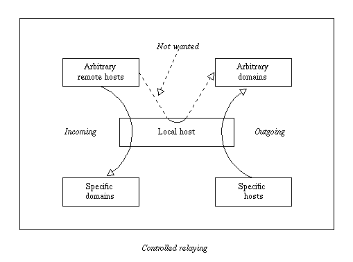

Access Control Lists (ACLs) are defined in a separate section of the run time configuration file, headed by “begin acl”. Each ACL definition starts with a name, terminated by a colon. Here is a complete ACL section which contains just one very small ACL:
begin acl small_acl: accept hosts = one.host.only
You can have as many lists as you like in the ACL section, and the order in which they appear does not matter. The lists are self-terminating.
The majority of ACLs are used to control Exim's behaviour when it receives certain SMTP commands. This applies both to incoming TCP/IP connections, and when a local process submits a message over a pipe (using the -bs option). The most common use is for controlling which recipients are accepted in incoming messages. In addition, you can also define an ACL that is used to check local non-SMTP messages. The default configuration file contains an example of a realistic ACL for checking RCPT commands. This is discussed in chapter 7.
The -bh command line option provides a way of testing your ACL configuration locally by running a fake SMTP session with which you interact. The host relay-test.mail-abuse.org provides a service for checking your relaying configuration (see section 38.27 for more details).
In order to cause an ACL to be used, you have to name it in one of the relevant options in the main part of the configuration. These options are:
| acl_not_smtp | ACL for non-SMTP messages |
| acl_smtp_auth | ACL for AUTH |
| acl_smtp_connect | ACL for start of SMTP connection |
| acl_smtp_data | ACL after DATA |
| acl_smtp_etrn | ACL for ETRN |
| acl_smtp_expn | ACL for EXPN |
| acl_smtp_helo | ACL for HELO or EHLO |
| acl_smtp_mail | ACL for MAIL |
| acl_smtp_mailauth | ACL for the AUTH parameter of MAIL |
| acl_smtp_rcpt | ACL for RCPT |
| acl_smtp_starttls | ACL for STARTTLS |
| acl_smtp_vrfy | ACL for VRFY |
For example, if you set
acl_smtp_rcpt = small_acl
the little ACL defined above is used whenever Exim receives a RCPT command in an SMTP dialogue. The majority of policy tests on incoming messages can be done when RCPT commands arrive. A rejection of RCPT should cause the sending MTA to give up on the recipient address contained in the RCPT command, whereas rejection at other times may cause the client MTA to keep on trying to deliver the message. It is therefore recommended that you do as much testing as possible at RCPT time.
However, you cannot test the contents of the message, for example, to verify addresses in the headers, at RCPT time. Such tests have to appear in the ACL that is run after the message has been received, before the final response to the DATA command is sent. This is the ACL specified by acl_smtp_data. At this time, it is no longer possible to reject individual recipients. An error response should reject the entire message. Unfortunately, it is known that some MTAs do not treat hard (5xx) errors correctly at this point – they keep the message on their queues and try again later, but that is their problem, though it does waste some of your resources.
The ACL test specified by acl_smtp_connect happens after the test specified by host_reject_connection (which is now an anomaly) and any TCP Wrappers testing (if configured).
The non-SMTP ACL applies to all non-interactive incoming messages, that is, it applies to batch SMTP as well as to non-SMTP messages. (Batch SMTP is not really SMTP.) This ACL is run just before the local_scan() function. Any kind of rejection is treated as permanent, because there is no way of sending a temporary error for these kinds of message. Many of the ACL conditions (for example, host tests, and tests on the state of the SMTP connection such as encryption and authentication) are not relevant and are forbidden in this ACL.
The result of running an ACL is either “accept” or “deny”, or, if some test cannot be completed (for example, if a database is down), “defer”. These results cause 2xx, 5xx, and 4xx return codes, respectively, to be used in the SMTP dialogue. A fourth return, “error”, occurs when there is an error such as invalid syntax in the ACL. This also causes a 4xx return code.
The ACLs that are relevant to message reception may also return “discard”. This has the effect of “accept”, but causes either the entire message or an individual recipient address to be discarded. In other words, it is a blackholing facility. Use it with great care.
If the ACL for MAIL returns “discard”, all recipients are discarded, and no ACL is run for subsequent RCPT commands. The effect of “discard” in a RCPT ACL is to discard just the one address. If there are no recipients left when the message's data is received, the DATA ACL is not run. A “discard” return from the DATA or the non-SMTP ACL discards all the remaining recipients.
The local_scan() function is always run, even if there are no remaining recipients; it may create new recipients.
The default actions when any of the acl_xxx options are unset are not all the same. Note: These defaults apply only when the relevant ACL is not defined at all. For any defined ACL, the default action if control reaches the end of the ACL statements is “deny”.
For acl_not_smtp, acl_smtp_auth, acl_smtp_connect, acl_smtp_data, acl_smtp_helo, acl_smtp_mail, acl_smtp_mailauth, and acl_smtp_starttls, the action when the ACL is not defined is “accept”.
For the others (acl_smtp_etrn, acl_smtp_expn, acl_smtp_rcpt, and acl_smtp_vrfy), the action when the ACL is not defined is “deny”. This means that acl_smtp_rcpt must be defined in order to receive any messages over an SMTP connection. For an example, see the ACL in the default configuration file.
When an ACL for MAIL, RCPT, or DATA is being run, the variables that contain information about the host and the message's sender (for example, $sender_host_address and $sender_address) are set, and can be used in ACL statements. In the case of RCPT (but not MAIL or DATA), $domain and $local_part are set from the argument address.
When an ACL for the AUTH parameter of MAIL is being run, the variables that contain information about the host are set, but $sender_address is not yet set.
The $message_size variable is set to the value of the SIZE parameter on the MAIL command at MAIL and RCPT time, or -1 if that parameter was not given. Its value is updated to the true message size by the time the ACL after DATA is run.
The $rcpt_count variable increases by one for each RCPT command received. The $recipients_count variable increases by one each time a RCPT command is accepted, so while an ACL for RCPT is being processed, it contains the number of previously accepted recipients. At DATA time, $rcpt_count contains the total number of RCPT commands, and $recipients_count contains the total number of accepted recipients.
When an ACL for AUTH, ETRN, EXPN, STARTTLS, or VRFY is being run, the remainder of the SMTP command line is placed in $smtp_command_argument. This can be tested using a condition condition. For example, here is an ACL for use with AUTH, which insists that either the session is encrypted, or the CRAM-MD5 authentication method is used. In other words, it does not permit authentication methods that use cleartext passwords on unencrypted connections.
acl_check_auth:
accept encrypted = *
accept condition = ${if eq{${uc:$smtp_command_argument}}\
{CRAM-MD5}{yes}{no}}
deny message = TLS encryption or CRAM-MD5 required
(Another way of applying this restriction is to arrange for the authenticators that use cleartext passwords not to be advertised when the connection is not encrypted. You can use the generic server_advertise_condition authenticator option to do this.)
The value of an acl_smtp_xxx option is expanded before use, so you can use different ACLs in different circumstances, and in fact the resulting string does not have to be the name of a configured list. Having expanded the string, Exim searches for an ACL as follows:
If the string begins with a slash, Exim attempts to open the file and read its contents as an ACL. The lines are processed in the same way as lines in the Exim configuration file. In particular, continuation lines are supported, blank lines are ignored, as are lines whose first non-whitespace character is “#”. If the file does not exist or cannot be read, an error occurs (typically causing a temporary failure of whatever caused the ACL to be run). For example:
acl_smtp_data = /etc/acls/\
${lookup{$sender_host_address}lsearch\
{/etc/acllist}{$value}{default}}
This looks up an ACL file to use on the basis of the host's IP address, falling back to a default if the lookup fails. If an ACL is successfully read from a file, it is retained in memory for the duration of the Exim process, so that it can be re-used without having to re-read the file.
If the string does not start with a slash, and does not contain any spaces, Exim searches the ACL section of the configuration for a list whose name matches the string.
If no named ACL is found, or if the string contains spaces, Exim parses the string as an inline ACL. This can save typing in cases where you just want to have something like
acl_smtp_vrfy = accept
in order to allow free use of the VRFY command. Such a string may contain newlines; it is processed in the same way as an ACL that is read from a file.
An individual ACL consists of a number of statements. Each statement starts with a verb, optionally followed by a number of conditions and other modifiers. If all the conditions are met, the verb is obeyed. The same condition may be used (with different arguments) more than once in the same statement. This provides a means of specifying an “and” conjunction between conditions. For example:
deny dnslists = list1.example dnslists = list2.example
If there are no conditions, the verb is always obeyed. What happens if any of the conditions are not met depends on the verb (and in one case, on a special modifier). Not all the conditions make sense at every testing point. For example, you cannot test a sender address in the ACL that is run for a VRFY command.
The verbs are as follows:
accept: If all the conditions are met, the ACL returns “accept”. If any of the conditions are not met, what happens depends on whether endpass appears among the conditions (for syntax see below). If the failing condition precedes endpass, control is passed to the next ACL statement; if it follows endpass, the ACL returns “deny”. Consider this statement, used to check a RCPT command:
accept domains = +local_domains endpass verify = recipient
If the recipient domain does not match the domains condition, control passes to the next statement. If it does match, the recipient is verified, and the command is accepted if verification succeeds. However, if verification fails, the ACL yields “deny”, because the failing condition is after endpass.
defer: If all the conditions are met, the ACL returns “defer” which, in an SMTP session, causes a 4xx response to be given. For a non-SMTP ACL, defer is the same as deny, because there is no way of sending a temporary error. For a RCPT command, defer is much the same as using a redirect router and :defer: while verifying, but the defer verb can be used in any ACL, and even for a recipient it might be a simpler approach.
deny: If all the conditions are met, the ACL returns “deny”. If any of the conditions are not met, control is passed to the next ACL statement. For example,
deny dnslists = blackholes.mail-abuse.org
rejects commands from hosts that are on a DNS black list.
discard: This verb behaves like accept, except that it returns “discard” from the ACL instead of “accept”. It is permitted only on ACLs that are concerned with receiving messages, and it causes recipients to be discarded. If the log_message modifier is set when discard operates, its contents are added to the line that is automatically written to the log.
If discard is used in an ACL for RCPT, just the one recipient is discarded; if used for MAIL, DATA or in the non-SMTP ACL, all the message's recipients are discarded. Recipients that are discarded before DATA do not appear in the log line when the log_recipients log selector is set.
drop: This verb behaves like deny, except that an SMTP connection is forcibly closed after the 5xx error message has been sent. For example:
drop message = I don't take more than 20 RCPTs
condition = ${if > {$rcpt_count}{20}{yes}{no}}
There is no difference between deny and drop for the connect-time ACL. The connection is always dropped after sending a 550 response.
require: If all the conditions are met, control is passed to the next ACL statement. If any of the conditions are not met, the ACL returns “deny”. For example, when checking a RCPT command,
require verify = sender
passes control to subsequent statements only if the message's sender can be verified. Otherwise, it rejects the command.
warn: If all the conditions are met, a header line is added to an incoming message and/or a line is written to Exim's main log. In all cases, control passes to the next ACL statement. The text of the added header line and the log line are specified by modifiers; if they are not present, a warn verb just checks its conditions and obeys any “immediate” modifiers such as set and logwrite.
If any condition on a warn statement cannot be completed (that is, there is some sort of defer), no header is added and the configured log line is not written. No further conditions or modifiers in the warn statement are processed. The incident is logged, but the ACL continues to be processed, from the next statement onwards.
When testing an incoming message, the message modifier can be used on a warn statement to add an extra header line, as in this example:
warn message = X-blacklisted-at: $dnslist_domain dnslists = blackholes.mail-abuse.org : \ dialup.mail-abuse.org
If an identical header line is requested several times (provoked, for example, by multiple RCPT commands), only one copy is actually added to the message. If the text of the message modifier is not a valid header line, X-ACL-Warn: is added to the front of it.
Header lines that are added by an ACL at MAIL or RCPT time are not visible in string expansions in the ACL for subsequent RCPT commands. However they are visible in string expansions in the ACL that is run after DATA. If you want to preserve data between MAIL and RCPT ACLs, you can use ACL variables, as described in the next section. If a message is rejected after DATA, all added header lines are included in the entry that is written to the reject log.
If a message modifier is present on a warn verb in an ACL that is not testing an incoming message, it is ignored, and the incident is logged.
A warn statement may use the log_message modifier to cause a line to be written to the main log when the statement's conditions are true. Just as for message, if an identical log line is requested several times in the same message, only one copy is actually written to the log. If you want to force duplicates to be written, use the logwrite modifier instead.
When one of the warn conditions is an address verification that fails, the text of the verification failure message is in $acl_verify_message. If you want this logged, you must set it up explicitly. For example:
warn !verify = sender log_message = sender verify failed: $acl_verify_message
At the end of each ACL there is an implicit unconditional deny.
As you can see from the examples above, the conditions and modifiers are written one to a line, with the first one on the same line as the verb, and subsequent ones on following lines. If you have a very long condition, you can continue it onto several physical lines by the usual \ continuation mechanism. It is conventional to align the conditions vertically.
There are some special variables that can be set during ACL processing. They can be used to pass information between different ACLs, different invocations of the same ACL in the same SMTP connection, and between ACLs and the routers, transports, and filters that are used to deliver a message. There are two sets of these variables:
The values of $acl_c0 to $acl_c9 persist throughout an SMTP connection. They are never reset. Thus, a value that is set while receiving one message is still available when receiving the next message on the same SMTP connection.
The values of $acl_m0 to $acl_m9 persist only while a message is being received. They are reset afterwards. They are also reset by MAIL, RSET, EHLO, HELO, and after starting up a TLS session.
When a message is accepted, the current values of all the ACL variables are preserved with the message and are subsequently made available at delivery time.
The ACL variables are set by modifier called set. For example:
accept hosts = whatever set acl_m4 = some value
Note that the leading dollar sign is not used when naming a variable that is to be set. If you want to set a variable without taking any action, you can use a warn verb without any other modifiers.
An exclamation mark preceding a condition negates its result. For example,
deny domains = *.dom.example !verify = recipient
causes the ACL to return “deny” if the recipient domain ends in dom.example, but the recipient address cannot be verified.
The arguments of conditions and modifiers are expanded. A forced failure of an expansion causes a condition to be ignored, that is, it behaves as if the condition is true. Consider these two statements:
accept senders = ${lookup{$host_name}lsearch\
{/some/file}{$value}fail}
accept senders = ${lookup{$host_name}lsearch\
{/some/file}{$value}{}}
Each attempts to look up a list of acceptable senders. If the lookup succeeds, the returned list is searched, but if the lookup fails the behaviour is different in the two cases. The fail in the first statement causes the condition to be ignored, leaving no further conditions. The accept verb therefore succeeds. The second statement, however, generates an empty list when the lookup fails. No sender can match an empty list, so the condition fails, and therefore the accept also fails.
ACL modifiers appear mixed in with conditions in ACL statements. Some of them specify actions that are taken as the conditions for a statement are checked; others specify text for messages that are used when access is denied or a warning is generated.
The positioning of the modifiers in an ACL statement important, because the processing of a verb ceases as soon as its outcome is known. Only those modifiers that have already been encountered will take effect. For the accept and require statements, this means that processing stops as soon as a false condition is met. For example, consider this use of the message modifier:
require message = Can't verify sender verify = sender message = Can't verify recipient verify = recipient message = This message cannot be used
If sender verification fails, Exim knows that the result of the statement is “deny”, so it goes no further. The first message modifier has been seen, so its text is used as the error message. If sender verification succeeds, but recipient verification fails, the second message is used. If recipient verification succeeds, the third message becomes “current”, but is never used because there are no more conditions to cause failure.
For the deny verb, on the other hand, it is always the last message modifier that is used, because all the conditions must be true for rejection to happen. Specifying more than one message modifier does not make sense, and the message can even be specified after all the conditions. For example:
deny hosts = ... !senders = *@my.domain.example message = Invalid sender from client host
The “deny” result does not happen until the end of the statement is reached, by which time Exim has set up the message.
The ACL modifiers are as follows:
This modifier may appear only in ACLs for commands relating to incoming messages. It affects the subsequent processing of the message, provided that the message is eventually accepted. The text must be one of the words “freeze”, “queue_only”, or “submission” (in the latter case, optionally followed by slash-delimited options). The first two cause the message to be frozen or just queued (without immediate delivery), respectively. The third tells Exim that this message is a submission from a local MUA. In this case, Exim applies certain fixups to the message if necessary. For example, it add a Date: header line if one is not present. Details are given in chapter 44.
Once one of these controls is set, it remains set for the message. For example, if control is used in a RCPT ACL, it applies to the whole message, not just the individual recipient. The control modifier can be used in several different ways. For example:
It can be at the end of an accept statement:
accept ...some conditions... control = queue_only
In this case, the control is applied when this statement yields “accept”.
It can be in the middle of an accept statement:
accept ...some conditions... control = queue_only ...some more conditions...
If the first set of conditions are true, the control is applied, even if the statement does not accept because one of the second set of conditions is false. In this case, some subsequent statement must yield “accept” for the control to be relevant.
It can be used with warn to apply the control, leaving the decision about accepting or denying to a subsequent verb. For example:
warn ...some conditions... control = freeze accept ...
This example of warn does not contain message, log_message, or logwrite, so it does not add anything to the message and does not write a log entry.
This modifier causes Exim to wait for the time interval before proceeding. The time is given in the usual Exim notation. This modifier may appear in any ACL. The delay happens as soon as the modifier is processed. However, when testing Exim using the -bh option, the delay is not actually imposed (an appropriate message is output).
Like control, delay can be used with accept or deny, for example:
deny ...some conditions... delay = 30s
The delay happens if all the conditions are true, before the statement returns “deny”. Compare this with:
deny delay = 30s ...some conditions...
which waits for 30s before processing the conditions. The delay modifier can also be used with warn and together with control:
warn ...some conditions...
delay = 2m
control = freeze
accept ...
endpass
This modifier, which has no argument, is recognized only in accept statements. It marks the boundary between the conditions whose failure causes control to pass to the next statement, and the conditions whose failure causes the ACL to return “deny”. See the description of accept above.
log_message = <text>
This modifier sets up a message that is used as part of the log message if the ACL denies access or a warn statement's conditions are true. For example:
require log_message = wrong cipher suite $tls_cipher encrypted = DES-CBC3-SHA
log_message adds to any underlying error message that may exist because of the condition failure. For example, while verifying a recipient address, a :fail: redirection might have already set up a message. Although the message is usually defined before the conditions to which it applies, the expansion does not happen until Exim decides that access is to be denied. This means that any variables that are set by the condition are available for inclusion in the message. For example, the $dnslist_<xxx> variables are set after a DNS black list lookup succeeds. If the expansion of log_message fails, or if the result is an empty string, the modifier is ignored.
If you want to use a warn statement to log the result of an address verification, you can use $acl_verify_message to include the verification error message.
If log_message is used with a warn statement, “Warning:” is added to the start of the logged message. If the same warning log message is requested more than once while receiving a single email message, only one copy is actually logged. If you want to log multiple copies, use logwrite instead of log_message. In the absence of log_message and logwrite, nothing is logged for a succesful warn statement.
If log_message is not present and there is no underlying error message (for example, from the failure of address verification), but message is present, the message text is used for logging rejections. However, if any text for logging contains newlines, only the first line is logged. In the absence of both log_message and message, a default built-in message is used for logging rejections.
This modifier writes a message to a log file as soon as it is encountered when processing an ACL. (Compare log_message, which, except in the case of warn, is used only if the ACL statement denies access.) The logwrite modifier can be used to log special incidents in ACLs. For example:
accept <some special conditions>
control = freeze
logwrite = froze message because ...
By default, the message is written to the main log. However, it may begin with a colon, followed by a comma-separated list of log names, and then another colon, to specify exactly which logs are to be written. For example:
logwrite = :main,reject: text for main and reject logs logwrite = :panic: text for panic log only
message = <text>
This modifier sets up a text string that is expanded and used as an error message if the current statement causes the ACL to deny access. The expansion happens at the time Exim decides that access is to be denied, not at the time it processes message. If the expansion fails, or generates an empty string, the modifier is ignored. For ACLs that are triggered by SMTP commands, the message is returned as part of the SMTP error response.
The message modifier is also used with the warn verb to specify one or more header lines to be added to an incoming message when all the conditions are true. If message is used with warn in an ACL that is not concerned with receiving a message, it has no effect.
The text is literal; any quotes are taken as literals, but because the string is expanded, backslash escapes are processed anyway. If the message contains newlines, this gives rise to a multi-line SMTP response. Like log_message, the contents of message are not expanded until after a condition has failed.
If message is used on a statement that verifies an address, the message specified overrides any message that is generated by the verification process. However, the original message is available in the variable $acl_verify_message, so you can incorporate it into your message if you wish. In particular, if you want the text from :fail: items in redirect routers to be passed back as part of the SMTP response, you should either not use a message modifier, or make use of $acl_verify_message.
set <acl_name> = <value>
This modifier puts a value into one of the ACL variables (see section 38.9).
Not all conditions are relevant in all circumstances. For example, testing senders and recipients does not make sense in an ACL that is being run as the result of the arrival of an ETRN command, and checks on message headers can be done only in the ACLs specified by acl_smtp_data and acl_not_smtp. You can use the same condition (obviously with different parameters) more than once in the same ACL statement. This provides a way of specifying an “and” conjunction. The conditions are as follows:
acl = <name of acl or ACL string or file name >
The possible values of the argument are the same as for the acl_smtp_xxx options. The named or inline ACL is run. If it returns “accept” the condition is true; if it returns “deny” the condition is false; if it returns “defer”, the current ACL returns “defer”. If it returns “drop” and the outer condition denies access, the connection is dropped. If it returns “discard”, the verb must be accept or discard, and the action is taken immediately – no further conditions are tested.
ACLs may be nested up to 20 deep; the limit exists purely to catch runaway loops. This condition allows you to use different ACLs in different circumstances. For example, different ACLs can be used to handle RCPT commands for different local users or different local domains.
If the SMTP connection is not authenticated, the condition is false. Otherwise, the name of the authenticator is tested against the list. To test for authentication by any authenticator, you can set
authenticated = *
This feature allows you to make up custom conditions. If the result of expanding the string is an empty string, the number zero, or one of the strings “no” or “false”, the condition is false. If the result is any non-zero number, or one of the strings “yes” or “true”, the condition is true. For any other values, some error is assumed to have occured, and the ACL returns “defer”.
dnslists = <list of domain names and other data>
This condition checks for entries in DNS black lists. These are also known as “RBL lists”, after the original Realtime Blackhole List, but note that the use of the lists at mail-abuse.org now carries a charge. There are too many different variants of this condition to describe briefly here. See sections 38.13--38.19 for details.
This condition is relevant only after a RCPT command. It checks that the domain of the recipient address is in the domain list. If percent-hack processing is enabled, it is done before this test is done. If the check succeeds with a lookup, the result of the lookup is placed in $domain_data until the next domains test.
If the SMTP connection is not encrypted, the condition is false. Otherwise, the name of the cipher suite in use is tested against the list. To test for encryption without testing for any specific cipher suite(s), set
encrypted = *
This condition tests that the calling host matches the host list. If you have name lookups or wildcarded host names and IP addresses in the same host list, you should normally put the IP addresses first. For example, you could have:
accept hosts = 10.9.8.7 : dbm;/etc/friendly/hosts
The reason for this lies in the left-to-right way that Exim processes lists. It can test IP addresses without doing any DNS lookups, but when it reaches an item that requires a host name, it fails if it cannot find a host name to compare with the pattern. If the above list is given in the opposite order, the accept statement fails for a host whose name cannot be found, even if its IP address is 10.9.8.7.
If you really do want to do the name check first, and still recognize the IP address even if the name lookup fails, you can rewrite the ACL like this:
accept hosts = dbm;/etc/friendly/hosts accept hosts = 10.9.8.7
The default action on failing to find the host name is to assume that the host is not in the list, so the first accept statement fails. The second statement can then check the IP address.
If a hosts condition is satisfied by means of a lookup, the result of the lookup is made available in the $host_data variable. This allows you, for example, to set up a statement like this:
deny hosts = net-lsearch;/some/file message = $host_data
which gives a custom error message for each denied host.
local_parts = <local part list>
This condition is relevant only after a RCPT command. It checks that the local part of the recipient address is in the list. If percent-hack processing is enabled, it is done before this test. If the check succeeds with a lookup, the result of the lookup is placed in $local_part_data until the next local_parts test.
This condition is relevant only after a RCPT command. It checks the entire recipient address against a list of recipients.
sender_domains = <domain list>
This condition tests the domain of the sender of the message against the given domain list. Note: the domain of the sender address is in $sender_address_domain. It is not put in $domain during the testing of this condition. This is an exception to the general rule for testing domain lists. It is done this way so that, if this condition is used in an ACL for a RCPT command, the recipient's domain (which is in $domain) can be used to influence the sender checking.
This condition tests the sender of the message against the given list. To test for a bounce message, which has an empty sender, set
senders = :
This condition is true in an SMTP session if the session is encrypted, and a certificate was received from the client, and the certificate was verified. The server requests a certificate only if the client matches tls_verify_hosts or tls_try_verify_hosts (see chapter 37).
verify = header_sender/<options>
This condition is relevant only in an ACL that is run after a message has been received, that is, in an ACL specified by acl_smtp_data. It checks that there is a verifiable sender address in at least one of the Sender:, Reply-To:, or From: header lines. Details of address verification and the options are given later, starting at section 38.20. You can combine this condition with the senders condition to restrict it to bounce messages only:
deny senders = : message = A valid sender header is required for bounces !verify = header_sender
This condition is relevant only in an ACL that is run after a message has been received, that is, in an ACL specified by acl_smtp_data or acl_not_smtp. It checks the syntax of all header lines that can contain lists of addresses (Sender:, From:, Reply-To:, To:, Cc:, and Bcc:). Unqualified addresses (local parts without domains) are permitted only in locally generated messages and from hosts that match sender_unqualified_hosts or recipient_unqualified_hosts, as appropriate.
Note that this condition is a syntax check only. However, a common spamming ploy is to send syntactically invalid headers such as
To: @
and this condition can be used to reject such messages.
This condition is true if a HELO or EHLO command has been received from the client host, and its contents have been verified. Verification of these commands does not happen by default. See the description of the helo_verify_hosts and helo_try_verify_hosts options for details of how to request it.
This condition is relevant only after a RCPT command. It verifies the current recipient. Details of address verification are given later, starting at section 38.20. After a recipient has been verified, the value of $address_data is the last value that was set while routing the address. This applies even if the verification fails. When an address that is being verified is redirected to a single address, verification continues with the new address, and in that case, the subsequent value of $address_data is the value for the child address.
This condition ensures that a verified host name has been looked up from the IP address of the client host. (This may have happened already if the host name was needed for checking a host list, or if the host matched host_lookup.) Verification ensures that the host name obtained from a reverse DNS lookup, or one of its aliases, does, when it is itself looked up in the DNS, yield the original IP address.
If this condition is used for a locally generated message (that is, when there is no client host involved), it always succeeds.
This condition is relevant only after a MAIL or RCPT command, or after a message has been received (the acl_smtp_data or acl_not_smtp ACLs). If the message's sender is empty (that is, this is a bounce message), the condition is true. Otherwise, the sender address is verified. Details of verification are given later, starting at section 38.20. Exim caches the result of sender verification, to avoid doing it more than once per message.
verify = sender=address/<options>
This is a variation of the previous option, in which a modified address is verified as a sender.
In its simplest form, the dnslists condition tests whether the calling host is on a DNS list by looking up the inverted IP address in one or more DNS domains. For example, if the calling host's IP address is 192.168.62.43, and the ACL statement is
deny dnslists = blackholes.mail-abuse.org : \ dialups.mail-abuse.org
the following domains are looked up:
43.62.168.192.blackholes.mail-abuse.org 43.62.168.192.dialups.mail-abuse.org
If a DNS lookup times out or otherwise fails to give a decisive answer, Exim behaves as if the host is not on the relevant list. This is usually the required action when dnslists is used with deny (which is the most common usage), because it prevents a DNS failure from blocking mail. However, you can change this behaviour by putting one of the following special items in the list:
+include_unknown behave as if the item is on the list
+exclude_unknown behave as if the item is not on the list (default)
+defer_unknown give a temporary error
Each of these applies to any subsequent items on the list. For example:
deny dnslists = +defer_unknown : foo.bar.example
Testing the list of domains stops as soon as a match is found. If you want to warn for one list and block for another, you can use two different statements:
deny dnslists = blackholes.mail-abuse.org warn message = X-Warn: sending host is on dialups list dnslists = dialups.mail-abuse.org
DNS list lookups are cached by Exim for the duration of the SMTP session, so a lookup based on the IP address is done at most once for any incoming connection. Exim does not share information between multiple incoming connections (but your local name server cache should be active).
There are some lists that are keyed on domain names rather than inverted IP addresses (see for example the domain based zones link at http://www.rfc-ignorant.org/). No reversing of components is used with these lists. You can change the name that is looked up in a DNS list by adding additional data to a dnslists item, introduced by a slash. For example,
deny message = Sender's domain is listed at $dnslist_domain dnslists = dsn.rfc-ignorant.org/$sender_address_domain
This particular example is useful only in ACLs that are obeyed after the RCPT or DATA commands, when a sender address is available. If (for example) the message's sender is user@tld.example the name that is looked up by this example is
tld.example.dsn.rfc-ignorant.org
You can mix entries with and without additional data in the same dnslists condition.
DNS lists are constructed using address records in the DNS. The original RBL just used the address 127.0.0.1 on the right hand side of each record, but the RBL+ list and some other lists use a number of values with different meanings. The values used on the RBL+ list are:
| 127.1.0.1 | RBL |
| 127.1.0.2 | DUL |
| 127.1.0.3 | DUL and RBL |
| 127.1.0.4 | RSS |
| 127.1.0.5 | RSS and RBL |
| 127.1.0.6 | RSS and DUL |
| 127.1.0.7 | RSS and DUL and RBL |
Some DNS lists may return more than one address record.
When an entry is found in a DNS list, the variable $dnslist_domain contains the name of the domain that matched, $dnslist_value contains the data from the entry, and $dnslist_text contains the contents of any associated TXT record. If more than one address record is returned by the DNS lookup, all the IP addresses are included in $dnslist_value, separated by commas and spaces.
You can use these variables in message or log_message modifiers – although these appear before the condition in the ACL, they are not expanded until after it has failed. For example:
deny hosts = !+local_networks message = $sender_host_address is listed \ at $dnslist_domain dnslists = rbl-plus.mail-abuse.example
If you add an equals sign and an IP address after a dnslists domain name, you can restrict its action to DNS records with a matching right hand side. For example,
deny dnslists = rblplus.mail-abuse.org=127.0.0.2
rejects only those hosts that yield 127.0.0.2. Without this additional data, any address record is considered to be a match. If more than one address record is found on the list, they are all checked for a matching right-hand side.
If you want to specify a constraining address and also change the name that is looked up, the address list must be specified first. For example:
deny dnslists = dsn.rfc-ignorant.org\ =127.0.0.2/$sender_address_domain
More than one IP address may be given for checking, using a comma as a separator. These are alternatives – if any one of them matches, the dnslists condition is true. For example:
deny dnslists = a.b.c=127.0.0.2,127.0.0.3
If the character “&” is used instead of “=”, the comparison for each listed IP address is done by a bitwise “and” instead of by an equality test. In other words, the listed addresses are used as bit masks. The comparison is true if all the bits in the mask are present in the address that is being tested. For example:
dnslists = a.b.c&0.0.0.3
matches if the address is x.x.x.3, x.x.x.7, x.x.x.11, etc. If you want to test whether one bit or another bit is present (as opposed to both being present), you must use multiple values. For example:
dnslists = a.b.c&0.0.0.1,0.0.0.2
matches if the final component of the address is an odd number or two times an odd number.
You can supply a negative list of IP addresses as part of a dnslists condition. Whereas
deny dnslists = a.b.c=127.0.0.2,127.0.0.3
means “deny if the host is in the black list at the domain a.b.c and the IP address yielded by the list is either 127.0.0.2 or 127.0.0.3”,
deny dnslists = a.b.c!=127.0.0.2,127.0.0.3
means “deny if the host is in the black list at the domain a.b.c and the IP address yielded by the list is not 127.0.0.2 and not 127.0.0.3”. In other words, the result of the test is inverted if an exclamation mark appears before the “=” (or the “&”) sign.
Note: this kind of negation is not the same as negation in a domain, host, or address list (which is why the syntax is different).
If you are using just one list, the negation syntax does not gain you much. The previous example is precisely equivalent to
deny dnslists = a.b.c !dnslists = a.b.c=127.0.0.2,127.0.0.3
However, if you are using multiple lists, the negation syntax is clearer. Consider this example:
deny dnslists = sbl.spamhaus.org : \ list.dsbl.org : \ dnsbl.njabl.org!=127.0.0.3 : \ relays.ordb.org
Using only positive lists, this would have to be:
deny dnslists = sbl.spamhaus.org : \ list.dsbl.org deny dnslists = dnsbl.njabl.org !dnslists = dnsbl.njabl.org=127.0.0.3 deny dnslists = relays.ordb.org
which is less clear, and harder to maintain.
If Exim is asked to do a dnslist lookup for an IPv6 address, it inverts it nibble by nibble. For example, if the calling host's IP address is 3ffe:ffff:836f:0a00:000a:0800:200a:c031, Exim might look up
1.3.0.c.a.0.0.2.0.0.8.0.a.0.0.0.0.0.a.0.f.6.3.8. f.f.f.f.e.f.f.3.blackholes.mail-abuse.org
(split over two lines here to fit on the page). Unfortunately, some of the DNS lists contain wildcard records, intended for IPv4, that interact badly with IPv6. For example, the DNS entry
*.3.some.list.example. A 127.0.0.1
is probably intended to put the entire 3.0.0.0/8 IPv4 network on the list. Unfortunately, it also matches the entire 3::/124 IPv6 network.
You can exclude IPv6 addresses from DNS lookups by making use of a suitable condition condition, as in this example:
deny condition = ${if isip4{$sender_host_address}{yes}{no}}
dnslists = some.list.example
Several of the verify conditions described in section 38.12 cause addresses to be verified. These conditions can be followed by options that modify the verification process. The options are separated from the keyword and from each other by slashes, and some of them contain parameters. For example:
verify = sender/callout verify = recipient/defer_ok/callout=10s,defer_ok
The first stage of verification is to run the address through the routers, in “verify mode”. Routers can detect the difference between verification and routing for delivery, and their actions can be varied by a number of generic options such as verify and verify_only (see chapter 15).
If there is a defer error while doing this verification routing, the ACL normally returns “defer”. However, if you include defer_ok in the options, the condition is forced to be true instead.
For non-local addresses, routing verifies the domain, but is unable to do any checking of the local part. There are situations where some means of verifying the local part is desirable. One way this can be done is to make an SMTP callback to the sending host (for a sender address) or a callforward to a subsequent host (for a recipient address), to see if the host accepts the address. We use the term callout to cover both cases. This facility should be used with care, because it can add a lot of resource usage to the cost of verifying an address. However, Exim does cache the results of callouts, which helps to reduce the cost. Details of caching are in the next section.
Recipient callouts are usually used only between hosts that are controlled by the same administration. For example, a corporate gateway host could use callouts to check for valid recipients on an internal mailserver. A successful callout does not guarantee that a real delivery to the address would succeed; on the other hand, a failing callout does guarantee that a delivery would fail.
If the callout option is present on a condition that verifies an address, a second stage of verification occurs if the address is successfully routed to one or more remote hosts. The usual case is routing by a dnslookup or a manualroute router, where the router specifies the hosts. However, if a router that does not set up hosts routes to an smtp transport with a hosts setting, the transport's hosts are used. If an smtp transport has hosts_override set, its hosts are always used, whether or not the router supplies a host list.
The port that is used is taken from the transport, if it is specified and is a remote transport. (For routers that do verification only, no transport need be specified.) Otherwise, the default SMTP port is used. If a remote transport specifies an outgoing interface, this is used; otherwise the interface is not specified.
For a sender callout check, Exim makes SMTP connections to the remote hosts, to test whether a bounce message could be delivered to the sender address. The following SMTP commands are sent:
HELO <primary host name>
MAIL FROM:<>
RCPT TO:<the address to be tested>
QUIT
LHLO is used instead of HELO if the transport's protocol option is set to “lmtp”.
A recipient callout check is similar. By default, it also uses an empty address for the sender. This default is chosen because most hosts do not make use of the sender address when verifying a recipient. Using the same address means that a single cache entry can be used for each recipient. Some sites, however, do make use of the sender address when verifying. These are catered for by the use_sender and use_postmaster options, described in the next section.
If the response to the RCPT command is a 2xx code, the verification succeeds. If it is 5xx, the verification fails. For any other condition, Exim tries the next host, if any. If there is a problem with all the remote hosts, the ACL yields “defer”, unless the defer_ok parameter of the callout option is given, in which case the condition is forced to succeed.
The callout option can be followed by an equals sign and a number of optional parameters, separated by commas. For example:
verify = recipient/callout=10s,defer_ok
The old syntax, which had callout_defer_ok and check_postmaster as separate verify options, is retained for backwards compatibility, but is now deprecated. The additional parameters for callout are as follows:
<a time>: This specifies the timeout that applies for the callout attempt to each host. For example:
verify = sender/callout=5s
The default is 30 seconds. The timeout is used for each response from the remote host.
defer_ok: Failure to contact any host, or any other kind of temporary error is treated as success by the ACL. However, the cache is not updated in this circumstance.
no_cache: The callout cache is neither read nor updated.
postmaster: A successful callout check is followed by a similar check for the local part postmaster at the same domain. If this address is rejected, the callout fails. The result of the postmaster check is recorded in a cache record; if it is a failure, this is used to fail subsequent callouts for the domain without a connection being made, until the cache record expires.
random: Before doing the normal callout check, Exim does a check for a “random” local part at the same domain. The local part is not really random – it is defined by the expansion of the option callout_random_local_part, which defaults to
$primary_host_name-$tod_epoch-testing
The idea here is to try to determine whether the remote host accepts all local parts without checking. If it does, there is no point in doing callouts for specific local parts. If the “random” check succeeds, the result is saved in a cache record, and used to force the current and subsequent callout checks to succeed without a connection being made, until the cache record expires.
use_postmaster: This option applies to recipient callouts only. For example:
deny !verify = recipient/callout=use_postmaster
It causes a non-empty postmaster address to be used in the MAIL command when performing the callout. The local part of the address is postmaster and the domain is the contents of $qualify_domain.
use_sender: This option applies to recipient callouts only. For example:
require verify = recipient/callout=use_sender
It causes the message's actual sender address to be used in the MAIL command when performing the callout, instead of an empty address. The cache for such callouts is keyed by the sender/recipient combination; thus, for any given recipient, many more actual callouts are performed than when an empty sender or postmaster is used. This option should be set only when you know that the called hosts make use of the sender when checking recipients.
Exim caches the results of callouts in order to reduce the amount of resources used, unless you specify the no_cache parameter with the callout option. A hints database called “callout” is used for the cache. Two different record types are used: one records the result of a callout check for a specific address, and the other records information that applies to the entire domain (for example, that it accepts the local part postmaster).
When an original callout fails, a detailed SMTP error message is given about the failure. However, for subsequent failures use the cache data, this message is not available.
The expiry times for negative and positive address cache records are independent, and can be set by the global options callout_negative_expire (default 2h) and callout_positive_expire (default 24h), respectively.
If a host gives a negative response to an SMTP connection, or rejects any commands up to and including
MAIL FROM:<>
(but not including the MAIL command with a non-empty address), any callout attempt is bound to fail. Exim remembers such failures in a domain cache record, which it uses to fail callouts for the domain without making new connections, until the domain record times out. There are two separate expiry times for domain cache records: callout_domain_negative_expire (default 3h) and callout_domain_positive_expire (default 7d).
Domain records expire when the negative expiry time is reached if callouts cannot be made for the domain, or if the postmaster check failed. Otherwise, they expire when the positive expiry time is reached. This ensures that, for example, a host that stops accepting “random” local parts will eventually be noticed.
The callout caching mechanism is based entirely on the domain of the address that is being tested. If the domain routes to several hosts, it is assumed that their behaviour will be the same.
When sender verification fails in an ACL, the details of the failure are given as additional output lines before the 550 response to the relevant SMTP command (RCPT or DATA). For example, if sender callout is in use, you might see:
MAIL FROM:<xyz@abc.example> 250 OK RCPT TO:<pqr@def.example> 550-Verification failed for <xyz@abc.example> 550-Called: 192.168.34.43 550-Sent: RCPT TO:<xyz@abc.example> 550-Response: 550 Unknown local part xyz in <xyz@abc.example> 550 Sender verification failed
If more than one RCPT command fails in the same way, the details are given only for the first of them. However, some administrators do not want to send out this much information. You can suppress the details by adding “/no_details” to the ACL statement that requests sender verification. For example:
verify = sender/no_details
A dilemma arises when a local address is redirected by aliasing or forwarding during verification: should the generated addresses themselves be verified, or should the successful expansion of the original address be enough to verify it? Exim takes the following pragmatic approach:
When an incoming address is redirected to just one child address, verification continues with the child address, and if that fails to verify, the original verification also fails.
When an incoming address is redirected to more than one child address, verification does not continue. A success result is returned.
This seems the most reasonable behaviour for the common use of aliasing as a way of redirecting different local parts to the same mailbox. It means, for example, that a pair of alias entries of the form
A.Wol: aw123 aw123: :fail: Gone away, no forwarding address
work as expected, with both local parts causing verification failure. When a redirection generates more than one address, the behaviour is more like a mailing list, where the existence of the alias itself is sufficient for verification to succeed.
An MTA is said to relay a message if it receives it from some host and delivers it directly to another host as a result of a remote address contained within it. Redirecting a local address via an alias or forward file and then passing the message on to another host is not relaying, but a redirection as a result of the “percent hack” is.
Two kinds of relaying exist, which are termed “incoming” and “outgoing”. A host which is acting as a gateway or an MX backup is concerned with incoming relaying from arbitrary hosts to a specific set of domains. On the other hand, a host which is acting as a smart host for a number of clients is concerned with outgoing relaying from those clients to the Internet at large. Often the same host is fulfilling both functions, as illustrated in the diagram below, but in principle these two kinds of relaying are entirely independent. What is not wanted is the transmission of mail from arbitrary remote hosts through your system to arbitrary domains.

You can implement relay control by means of suitable statements in the ACL that runs for each RCPT command. For convenience, it is often easiest to use Exim's named list facility to define the domains and hosts involved. For example, suppose you want to do the following:
Deliver a number of domains to mailboxes on the local host (or process them locally in some other way). Let's say these are my.dom1.example and my.dom2.example.
Relay mail for a number of other domains for which you are the secondary MX. These might be friend1.example and friend2.example.
Relay mail from the hosts on your local LAN, to whatever domains are involved. Suppose your LAN is 192.168.45.0/24.
In the main part of the configuration, you put the following definitions:
domainlist local_domains = my.dom1.example : my.dom2.example domainlist relay_domains = friend1.example : friend2.example hostlist relay_hosts = 192.168.45.0/24
Now you can use these definitions in the ACL that is run for every RCPT command:
acl_check_rcpt: accept domains = +local_domains : +relay_domains accept hosts = +relay_hosts
The first statement accepts any RCPT command that contains an address in the local or relay domains. For any other domain, control passes to the second statement, which accepts the command only if it comes from one of the relay hosts. In practice, you will probably want to make your ACL more sophisticated than this, for example, by including sender and recipient verification. The default configuration includes a more comprehensive example, which is described in chapter 7.
You can check the relay characteristics of your configuration in the same way that you can test any ACL behaviour for an incoming SMTP connection, by using the -bh option to run a fake SMTP session with which you interact.
For specifically testing for unwanted relaying, the host relay-test.mail-abuse.org provides a useful service. If you telnet to this host from the host on which Exim is running, using the normal telnet port, you will see a normal telnet connection message and then quite a long delay. Be patient. The remote host is making an SMTP connection back to your host, and trying a number of common probes to test for open relay vulnerability. The results of the tests will eventually appear on your terminal.